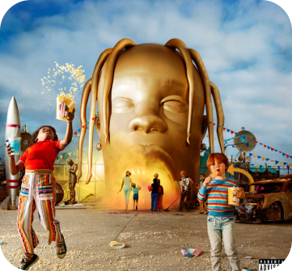

Mais do Artista
Ano de Lançamento
2018
Compositor(a)
Travis Scott
Letra
Astro, yeah Sun is down, freezin' cold That's how we already know winter's here My dawg would prolly do it for a Louis belt That's just all he know, he don't know nothin' else I tried to show 'em, yeah I tried to show 'em, yeah, yeah Yeah, yeah, yeah Gone on you with the pick and roll Young LaFlame, he in sicko mode Woo, made this here with all the ice on in the booth At the gate outside, when they pull up, they get me loose Yeah, Jump Out boys, that's Nike boys, hoppin' out coupes This shit way too big, when we pull up give me the loot (Gimme the loot) Was off the Remy, had a Papoose Had to hit my old town to duck the news Two-four hour lockdown, we made no moves Now it's 4AM and I'm back up poppin' with the crew I just landed in, Chase B mixes pop like Jamba Juice Different colored chains, think my jeweler really sellin' fruits And they chokin', man, know the crackers wish it was a noose Some-some-some, someone said To win the retreat, we all in too deep P-p-playin' for keeps, don't play us for weak (someone said) To win the retreat, we all in too deep P-p-playin' for keeps, don't play us for weak (yeah) This shit way too formal, y'all know I don't follow suit Stacey Dash, most of these girls ain't got a clue All of these hoes I made off records I produced I might take all my exes and put 'em all in a group Hit my esés, I need the bootch 'Bout to turn this function to Bonnaroo Told her, "Hop in, you comin' too" In the 305, bitches treat me like I'm Uncle Luke (Don't stop, pop that pussy) Had to slop the top off, it's just a roof (uh) She said, "Where we goin'?" I said, "The moon" We ain't even make it to the room She thought it was the ocean, it's just the pool Now I got her open, it's just the Goose Who put this shit together? I'm the glue (someone said) Shorty FaceTimed me out the blue Someone said (playin'-playin' for keeps) Someone said, motherfuck what someone said (Don't play us for weak) Yeah Astro Yeah, yeah Tay Keith, fuck these niggas up (ayy, ayy) She's in love with who I am Back in high school, I used to bus it to the dance (yeah) Now I hit the FBO with duffles in my hands I did half a Xan, thirteen hours 'til I land Had me out like a light, ayy, yeah Like a light, ayy, yeah Like a light, ayy Slept through the flight, ayy Knocked for the night, ayy, 767, man This shit got double bedroom, man I still got scores to settle, man I crept down the block (down the block), made a right (yeah, right) Cut the lights (yeah, what?), paid the price (yeah) Niggas think it's sweet (nah, nah), it's on sight (yeah, what?) Nothin' nice (yeah), baguettes in my ice (aww, man) Jesus Christ (yeah), checks over stripes (yeah) That's what I like (yeah), that's what we like (yeah) Lost my respect, you not a threat When I shoot my shot, that shit wetty like I'm Sheck (bitch) See the shots that I took (ayy), wet like I'm Book (ayy) Wet like I'm Lizzie, I be spinnin' Valley Circle blocks 'til I'm dizzy (yeah, what?) Like where is he? (Yeah, what?) No one seen him (yeah, yeah) I'm tryna clean 'em (yeah) She's in love with who I am Back in high school, I used to bus it to the dance Now I hit the FBO with duffles in my hand (woo) I did half a Xan, thirteen hours 'til I land Had me out like a light, like a light Like a light, like a light Like a light (yeah), like a light Like a light Yeah, passed the dawgs a celly Sendin' texts, ain't sendin' kites, yeah He said, "Keep that on lock" I said, "You know this shit, it's stife", yeah It's absolute (yeah), I'm back reboot (it's lit) LaFerrari to Jamba Juice, yeah (skrrt, skrrt) We back on the road, they jumpin' off, no parachute, yeah Shawty in the back She said she workin' on her glutes, yeah (oh my God) Ain't by the book, yeah This how it look, yeah 'Bout a check, yeah Just check the foots, yeah Pass this to my daughter, I'ma show her what it took (yeah) Baby mama cover Forbes, got these other bitches shook, yeah Ye-ah

Sicko Mode
Travis Scott